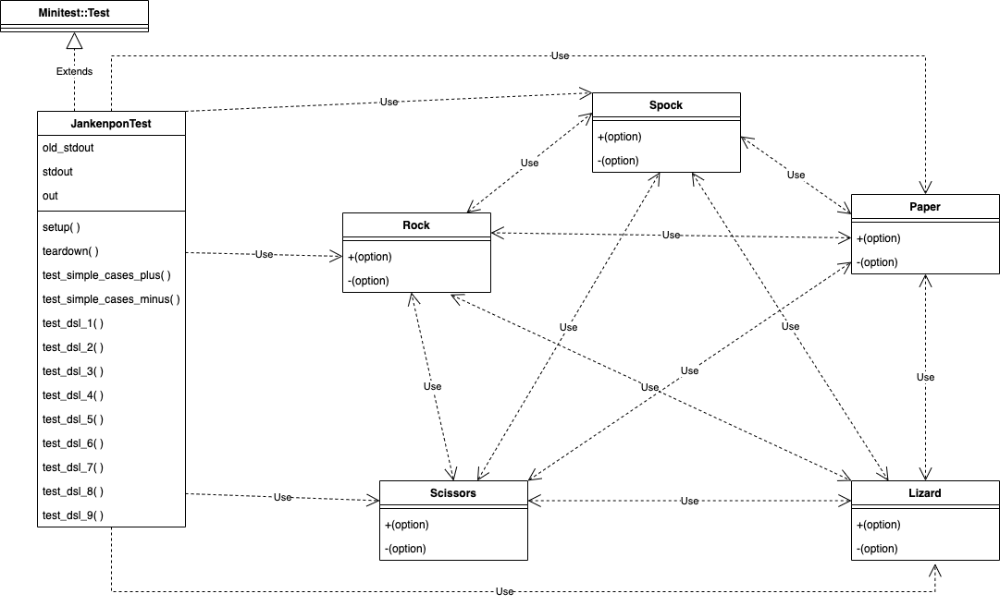

Domain-Specific Language Pattern¶ ↑
This documentation was developed as part of a programming activity for the Software Design and Architecture course (Tc3049), at the Tecnológico de Monterrey, Campus Estado de México.
Authors¶ ↑
-
A01376364 Alex Serrano Durán
-
A01377718 Javier Alexandro Vargas Sánchez
Overview¶ ↑
The Domain-Specific Language Pattern is a design pattern that uses a convenient syntax for a specefic domain in order to express the problem easily. This design pattern is ideal for use cases in which the user is not tech savvy and needs to use a computer to solve a problem.
The UML diagram for this programming activity is as follows:

To test the program, inside the src folder type the following instruction at the command line:
ruby -I . -w jankenpon_test.rb
References¶ ↑
-
R. Olsen. Design Patterns in Ruby. Addison-Wesley, 2007.
-
Ruby-Doc.org. RDoc Markup Reference. http://ruby-doc.org/stdlib-2.4.1/libdoc/rdoc/rdoc/RDoc/Markup.html.
-
StackOverflow. Ruby “Undefined Method” for class method {stackoverflow.com/questions/35965231/ruby-undefined-method-for-class-method} Accessed April 28, 2022.